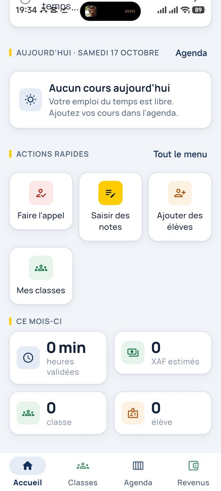
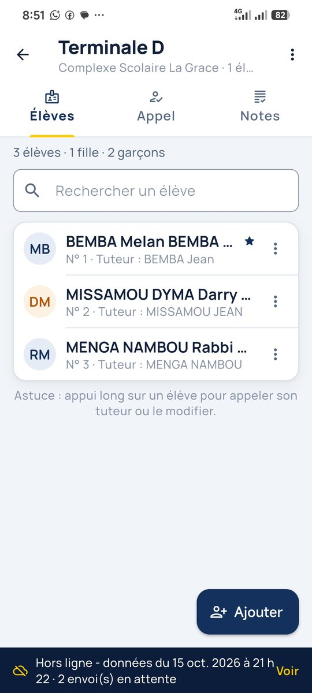
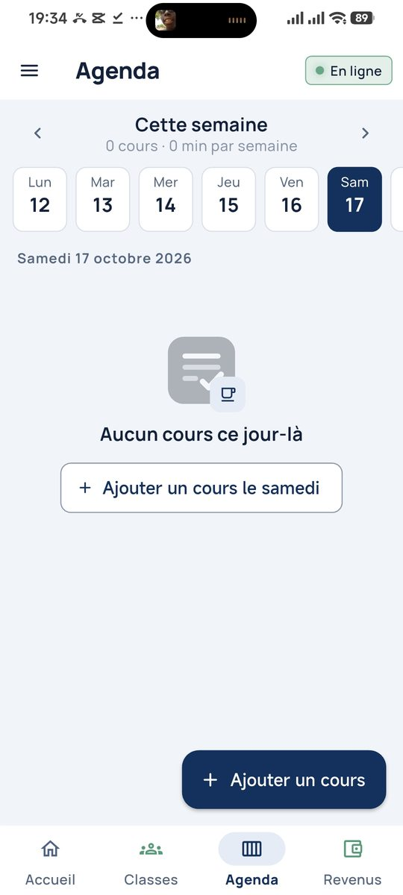
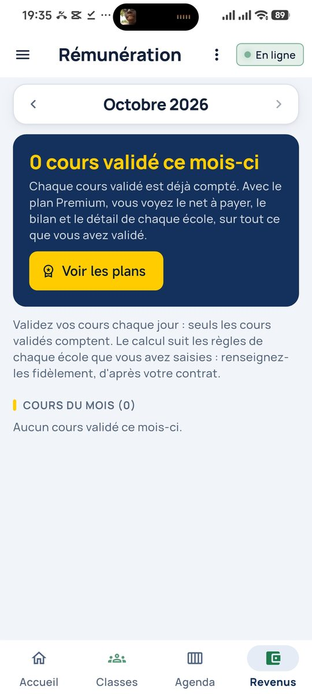
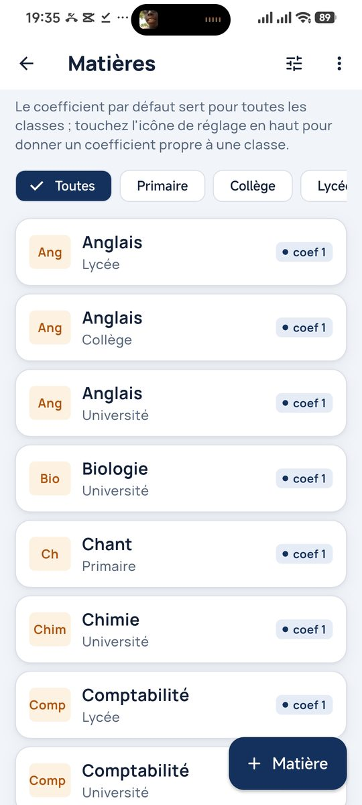
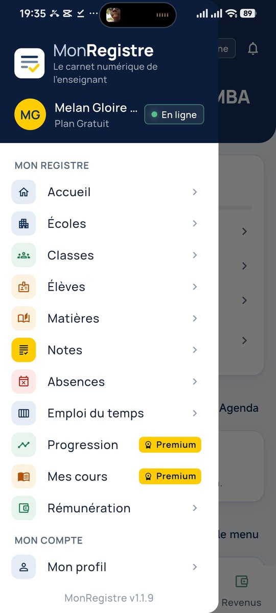
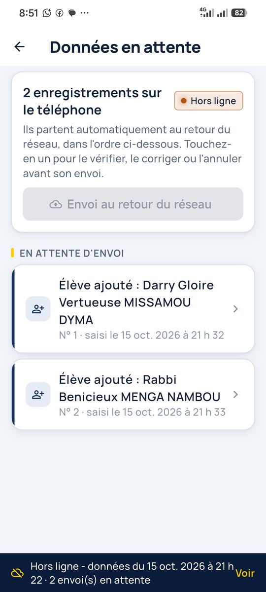

Le carnet numérique de l'enseignant
Votre carnet de classe, enfin au même endroit.
Vos écoles, vos classes, l'appel, les notes, l'emploi du temps et le suivi de vos heures, rassemblés dans une seule application. Tout fonctionne hors ligne : vos saisies partent d'elles-mêmes dès que le réseau revient.
Tout ce que l'enseignant tient d'habitude sur papier, dans son téléphone.
Toutes vos affectations, même dans plusieurs établissements, dans un seul registre.
Moyennes, rangs et appréciations calculés, bulletins et rapports PDF en un clic.
Votre journée, l'assiduité des élèves et les cours faits, en un geste.
Heures effectuées, tarifs par école et montants à percevoir, calculés pour vous.
Vos cours, vos chapitres, et l'avancement du programme classe par classe.
L'application mobile fonctionne hors ligne et se synchronise toute seule.
En classe, vous n'avez besoin de rien d'autre que votre téléphone. Internet ne sert qu'à trois moments précis.
Vous vous connectez une fois pour récupérer votre compte enseignant sur l'appareil.
Vos établissements, vos classes et leurs règles de rémunération sont enregistrés une fois pour toutes.
Vos saisies rejoignent la base en ligne, pour être retrouvées depuis n'importe quel appareil.
Entre ces moments, tout se fait sur le téléphone : l'appel, les notes, les élèves, les cours validés. Chaque saisie est gardée sur l'appareil et part automatiquement au retour du réseau, dans l'ordre où vous l'avez faite. Vous pouvez même la vérifier, la corriger ou l'annuler avant son envoi, depuis l'écran Données en attente.
Quelques écrans de l'application, en conditions réelles.







L'application n'est pas encore sur le Play Store : l'installation se fait en cinq étapes.
MonRegistre.apk arrive dans vos téléchargements.Non. Une fois connecté la première fois et vos écoles configurées, tout fonctionne hors ligne : l'appel, les notes, les élèves, l'emploi du temps et les cours validés. La connexion ne sert qu'à envoyer vos données vers la base en ligne, et cet envoi se fait tout seul dès que le réseau revient.
Elles sont gardées sur le téléphone, dans l'ordre où vous les avez faites, et visibles dans l'écran « Données en attente ». Vous pouvez les vérifier, les corriger ou les annuler avant leur envoi. Rien n'est perdu.
Le téléchargement et le plan gratuit le sont : une école, vos classes et vos élèves. Les fonctions Premium sont proposées dans l'application, sans obligation.
Oui, c'est même la raison d'être de l'application. Chaque école garde ses classes, ses matières, ses coefficients et ses règles de rémunération.
Installez l'application sur le nouvel appareil et connectez-vous avec les mêmes identifiants : vos écoles, classes, élèves et notes déjà synchronisés reviennent. Pensez à vérifier que rien ne reste en attente d'envoi sur l'ancien téléphone.
Pas pour le moment. L'application mobile est disponible sur Android.
Rejoignez la communauté WhatsApp, écrivez à support@monregistre.app, ou contactez-nous au +242 06 962 65 40, en précisant votre modèle de téléphone et votre version d'Android.